本章学习目标（Objectives）
- 复习复数及其极坐标旋转，理解四元数的动机；
- 掌握四元数代数（乘法、模、逆、共轭）；
- 用单位四元数表示 3D 旋转，掌握 Slerp 插值；
- 熟悉 DirectXMath 四元数函数。
欧拉角有万向节锁、旋转矩阵插值会"抽搐"——四元数是角色动画与相机系统旋转的标准答案。
22.1 复数回顾（Review of the Complex Numbers）
复数 z = a + bi 有加法（像向量）、模 |z|、共轭、极坐标表示 z = r(cosθ + i·sinθ)。关键观察：乘以 (cosθ + i·sinθ) = 旋转 θ 角（书中图示 z₁z₂ 让 z₁ 转过 θ₂）。四元数正是这个"复数=平面旋转"推广到"3D 旋转"的代数。
22.2 四元数代数（Quaternion Algebra）
四元数 q = (q₁, q₂, q₃, q₀)（书中记 q = q₁i + q₂j + q₃k + q₀），三个虚单位满足 i²=j²=k²=ijk=−1。运算：
- 加法/标量乘：分量运算；
- 模：‖q‖ = √(q₁²+q₂²+q₃²+q₀²)；
- 共轭：q* = (−q₁, −q₂, −q₃, q₀)（虚部变号）；
- 逆：q⁻¹ = q* / ‖q‖²；
- 乘法：不可交换（书中给出完整展开式与分量公式）。
22.3 单位四元数与旋转（Unit Quaternions and Rotations）
旋转用单位四元数表示：绕单位轴 n 旋转 θ 角：
把点/向量 v 塞进"纯四元数" p_v = (v, 0)，旋转结果 = p · p_v · p⁻¹（三明治乘法），取回向量部分即旋转后的 v。性质：连转 = 四元数相乘；反向旋转用共轭/逆。对比矩阵：存 4 个数、组合更快、数值稳定、无万向节锁。注意旋转了 2π 才回到原样（q 与 −q 表示同一旋转，插值时要注意"最短路径"）。
22.4 四元数插值（Quaternion Interpolation）
单位四元数是 4D 单位球上的点。动画要在两个朝向 a、b 之间平滑过渡：
- 线性插值（Lerp）：a、b 直接线性混合再归一化——快，但旋转速度不均匀；
- 球面插值（Slerp）：沿 4D 球面走大圆弧——恒定角速度，真正的"匀速旋转"：slerp(a,b,t) = [sin((1−t)θ)·a + sin(tθ)·b] / sinθ（θ 是 a、b 夹角，由 a·b 反余弦得）；
- 最短路径：若 a·b < 0（夹角超过 90°），先把 b 取负再插值——避免绕远路转 360°−θ。
关键帧动画：给一串关键帧四元数，帧间 slerp——第 23 章角色动画直接使用。
22.5 DirectXMath 四元数函数（DirectX Math Quaternion Functions）
XMQuaternionIdentity(); // 单位四元数 XMQuaternionRotationAxis(axis, angle); // 轴角 → 四元数 XMQuaternionRotationRollPitchYaw(p, y, r); // 欧拉角 → 四元数 XMQuaternionNormalize(q); // 归一化 XMQuaternionSlerp(q0, q1, t); // 球面插值 XMQuaternionMultiply(q0, q1); // 组合旋转 // 四元数 → 旋转矩阵（放进世界矩阵） XMMATRIX R = XMMatrixRotationQuaternion(q);
DirectXMath 的四元数函数需要单位四元数输入，且约定参数顺序（书中列出每个函数的参数/返回值注意事项，包括部分函数要求 XYZW 排布的转换）。
22.6 旋转演示（The Rotation Demo）
demo 用四元数控制骷髅的朝向：按住鼠标拖动累积"轴角旋转"，转成四元数与当前朝向相乘，再 slerp 到目标——展示无抖动的平滑旋转。对比直接欧拉角拼接时的翻滚问题。
本章小结
- 复数乘 = 平面旋转；四元数 = 3D 旋转的代数推广。
- 旋转四元数 = (n·sin(θ/2), cos(θ/2))；作用用三明治乘法 p·p_v·p⁻¹。
- Slerp 匀速插值 + 最短路径修正（a·b<0 时取负 b）。
- DirectXMath：RotationAxis / RotationQuaternion / Slerp / Multiply 四板斧。
🖼️ 原书插图（12 张，点击展开）
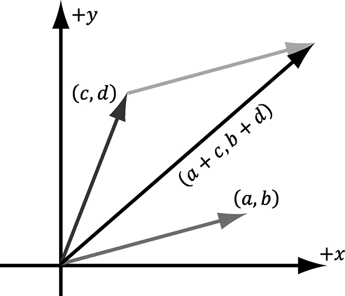
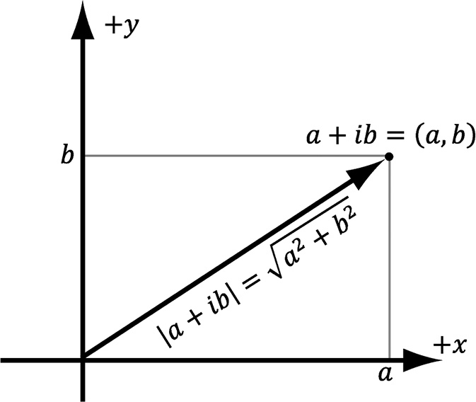
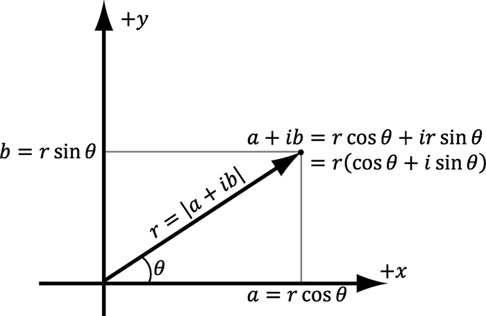
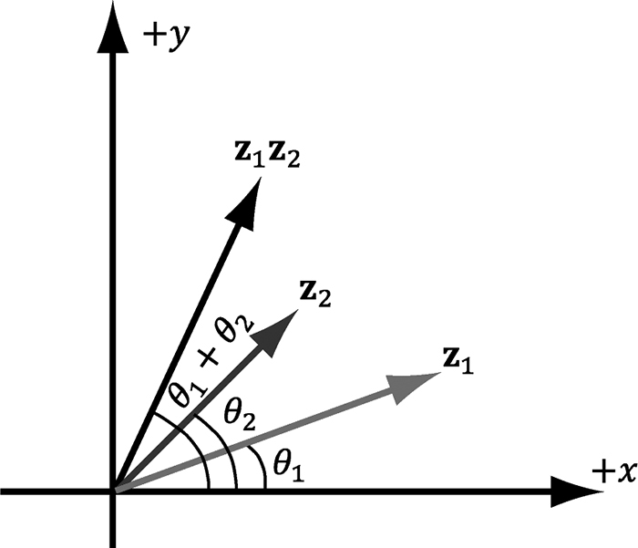
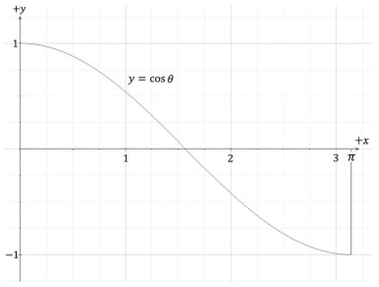
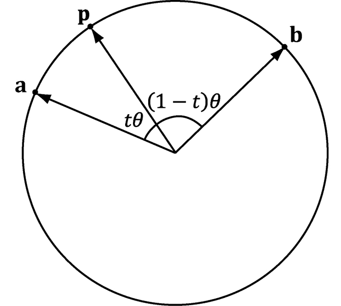
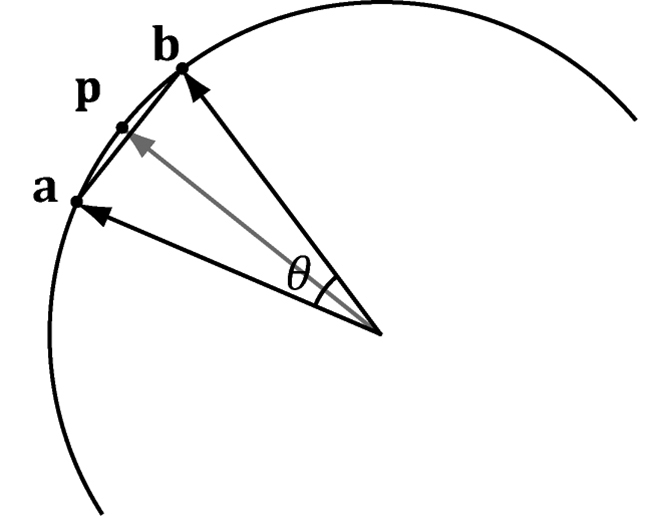
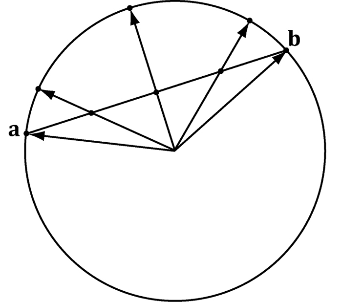
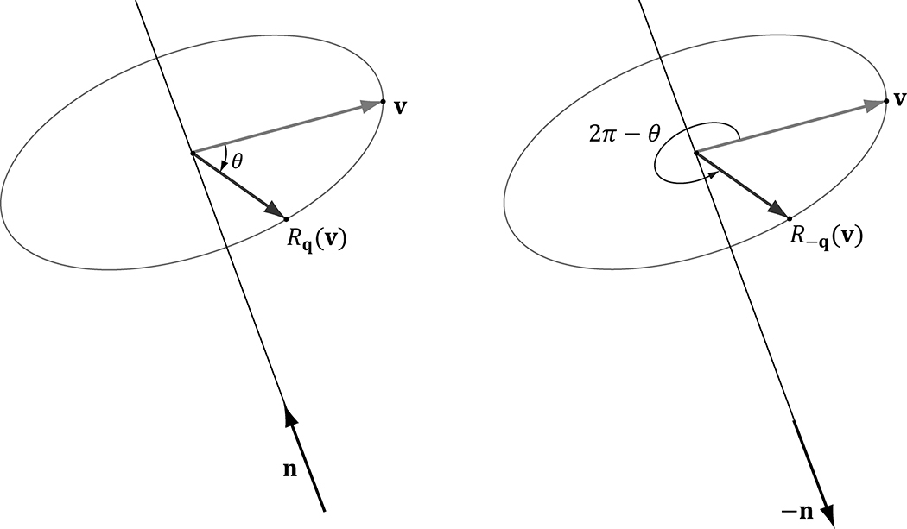
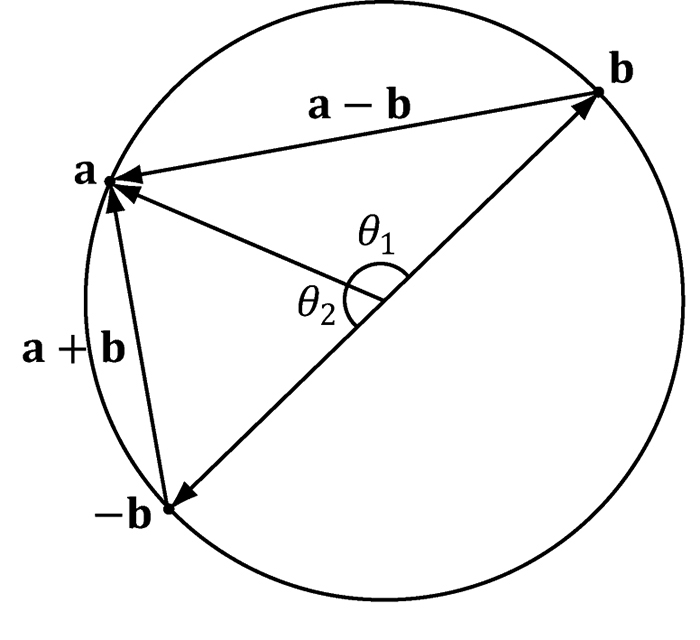
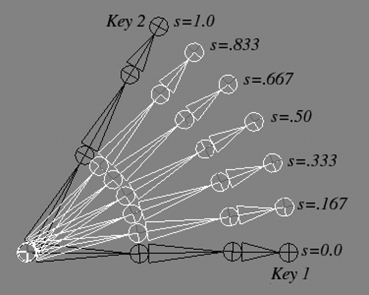
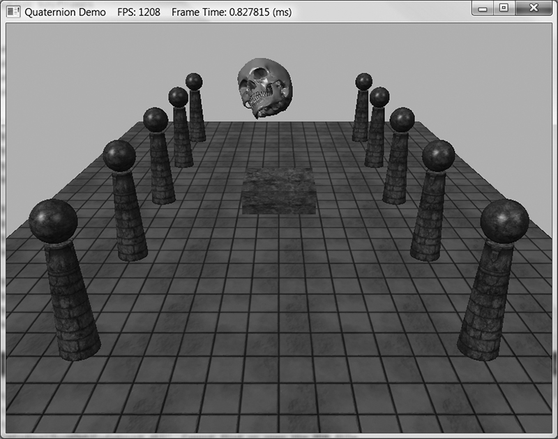